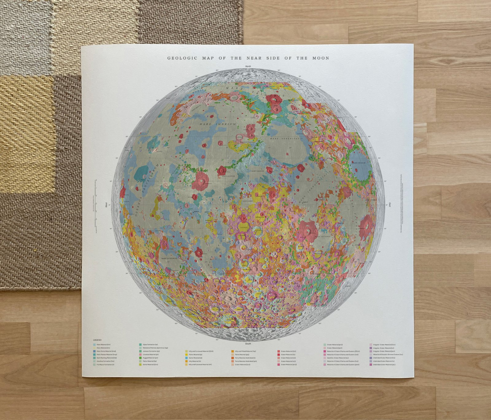
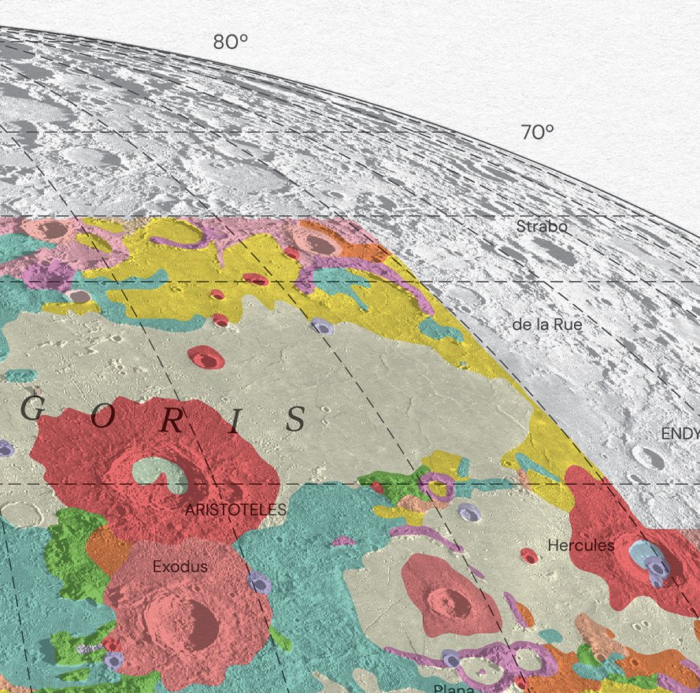
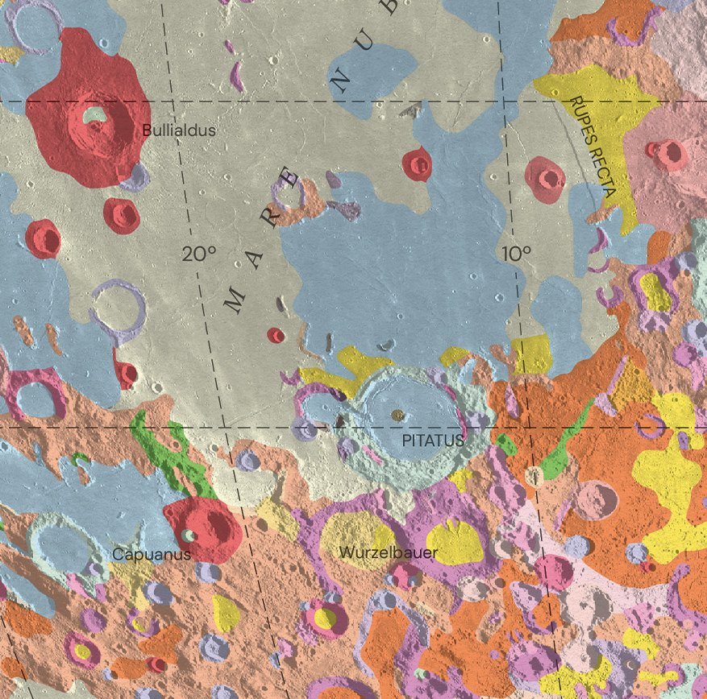
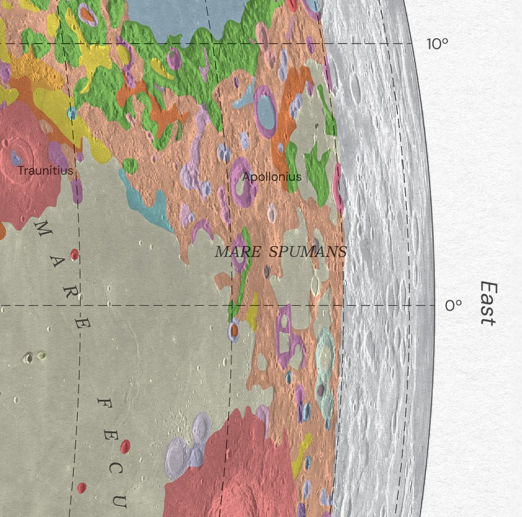
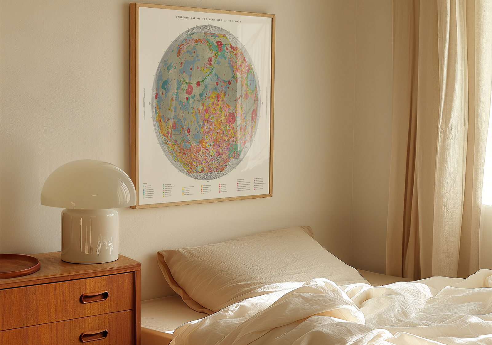
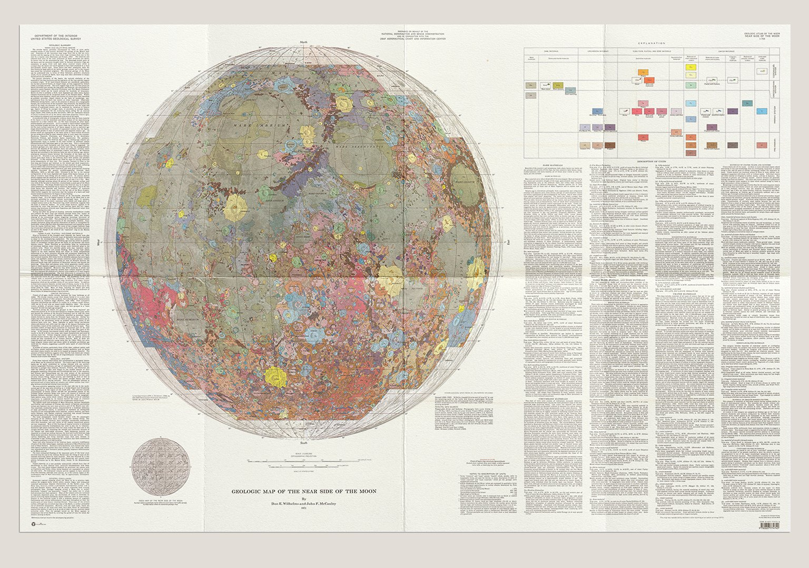

Geologic Map of the Near Side of the Moon
I recreated this geologic map of the Moon’s near side, originally published in 1971 by Don E. Wilhelms and John F. McCauley for the U.S. Geological Survey. Using tools like Illustrator and Photoshop, I aimed to modernize the design using a different color palette, while preserving the intricate details of the original. This project blends historical lunar cartography with contemporary graphic design, bringing vintage scientific data into a fresh visual context.






Original map by Don E. Wilhelms and John F. McCauley (1971)
Next: Formgiving Exhibition →